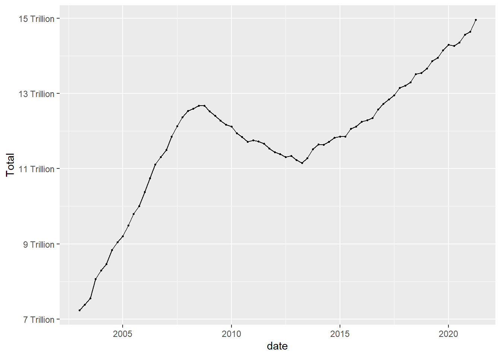
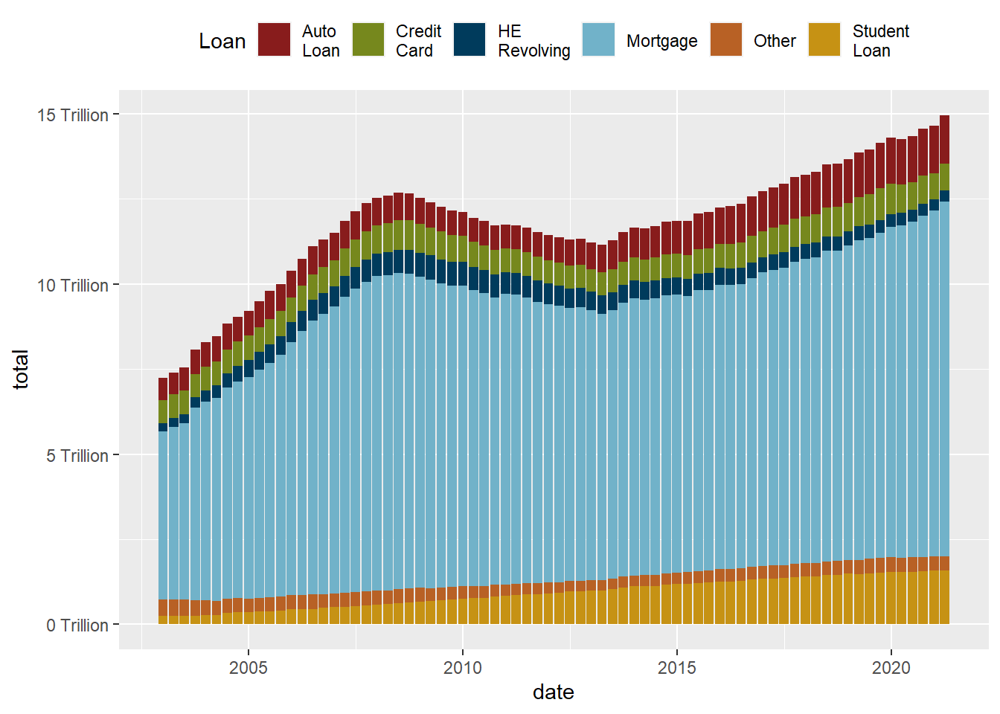
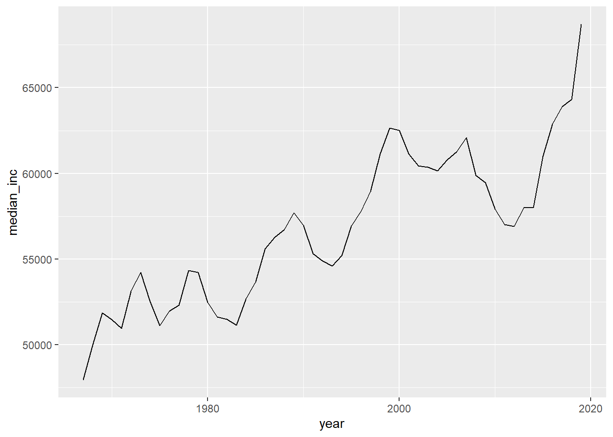
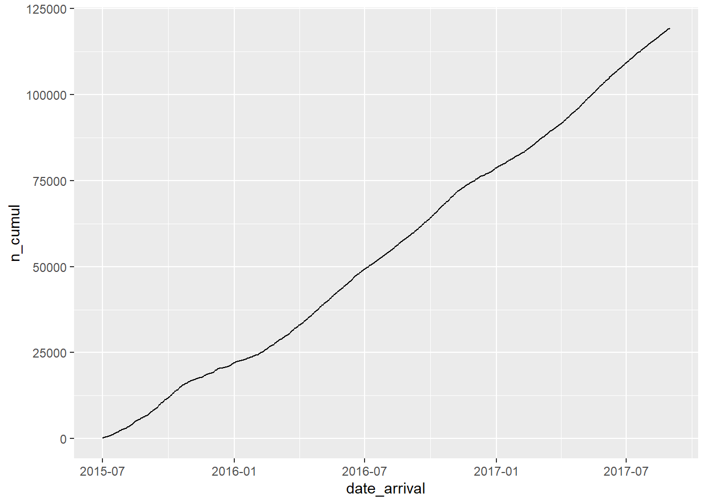
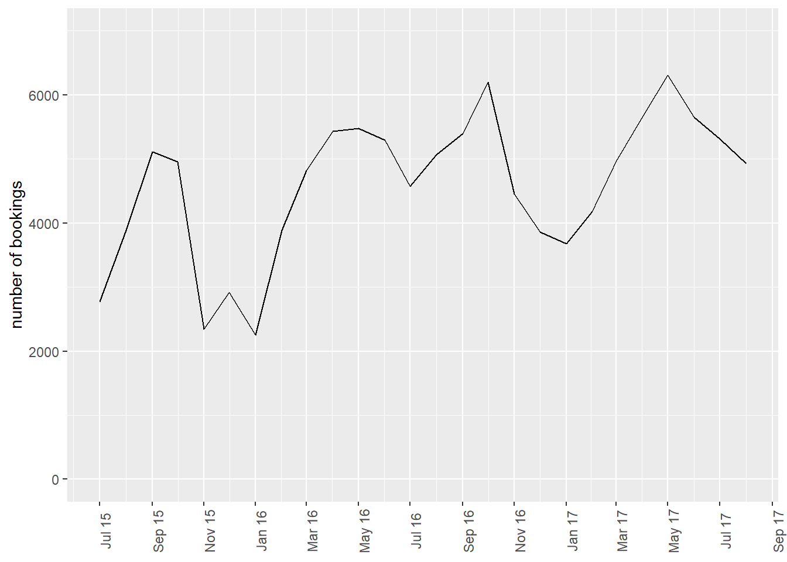

library(tidyverse)
library(ggplot2)
library(readxl)
library(lubridate)
library(here)
source(here("posts","umass_colors.R"))
knitr::opts_chunk$set(echo = TRUE, warning=FALSE, message=FALSE)Challenge 6 Solutions
challenge_6
solution
hotel_bookings
air_bnb
fed_rate
debt
usa_hh
abc_poll
Visualizing Time and Relationships
Challenge Overview
Today’s challenge is to:
- create at least one graph including time (evolution)
- try to make them “publication” ready (optional)
- Explain why you choose the specific graph type
- Create at least one graph depicting part-whole or flow relationships
- try to make them “publication” ready (optional)
- Explain why you choose the specific graph type
This data set runs from the first quarter of 2003 to the second quarter of 2021, and includes quarterly measures of the total amount of household debt associated with 6 different types of loans - mortgage,HE revolving, auto, credit card, student, and other - plus a total household debt including all 6 loan types. This is another fantastic macroeconomic data product from the New York Federal Reserve. See Challenge 4.
debt_orig<-here("posts","_data","debt_in_trillions.xlsx") %>%
read_excel()
debt<-debt_orig%>%
mutate(date = parse_date_time(`Year and Quarter`,
orders="yq"))Time Dependent Visualization
Lets look at how debt changes over time.
ggplot(debt, aes(x=date, y=Total)) +
geom_point()
ggplot(debt, aes(x=date, y=Total)) +
geom_point(size=.5) +
geom_line()+
scale_y_continuous(labels = scales::label_number(suffix = " Trillion"))

Visualizing Part-Whole Relationships
One thing to note is that it isn’t easy to include multiple lines on a single graph, that is because our data are not pivoted. Here is an example of how pivoting into tidy format makes things super easy.
umass_palette<-c("red", "green", "dark blue", "light blue", "orange",
"yellow")%>%
map(., get_umass_color)%>%
unlist(.)
debt_long<-debt%>%
pivot_longer(cols = Mortgage:Other,
names_to = "Loan",
values_to = "total")%>%
select(-Total)%>%
mutate(Loan = as.factor(Loan))
ggplot(debt_long, aes(x=date, y=total, color=Loan)) +
geom_point(size=.5) +
geom_line() +
theme(legend.position = "right") +
scale_y_continuous(labels = scales::label_number(suffix = " Trillion")) +
scale_colour_manual(values=umass_palette)
ggplot(debt_long, aes(x=date, y=total, fill=Loan)) +
geom_bar(position="stack", stat="identity") +
scale_y_continuous(labels = scales::label_number(suffix = " Trillion"))+
theme(legend.position = "top") +
guides(fill = guide_legend(nrow = 1)) +
scale_fill_manual(labels =
str_replace(levels(debt_long$Loan), " ", "\n"),
values=umass_palette)

While the stacked chart might be easier to read in some respects, it is harder to follow individual trend lines. One solution is to reorder in order to preserve as much information as possible.
debt_long<-debt_long%>%
mutate(Loan = fct_relevel(Loan, "Mortgage", "HE Revolving",
"Auto Loan", "Student Loan",
"Credit Card","Other"))
ggplot(debt_long, aes(x=date, y=total, fill=Loan)) +
geom_bar(position="stack", stat="identity") +
scale_y_continuous(labels = scales::label_number(suffix = " Trillion"))+
theme(legend.position = "top") +
guides(fill = guide_legend(nrow = 1)) +
scale_fill_manual(labels=
str_replace(levels(debt_long$Loan), " ", "\n"),
values=umass_palette)
This data set runs from July 1954 to March 2017, and includes daily macroeconomic indicators related to the effective federal funds rate - or the interest rate at which banks lend money to each other in order to meet mandated reserve requirements. There are 7 variables besides the date: 4 values related to the federal funds rate (target, upper target, lower target, and effective), 3 are related macroeconomic indicators (inflation, GDP change, and unemployment rate.)
fed_rates_vars<-here("posts","_data","FedFundsRate.csv") %>%
read_csv(n_max = 1,
col_names = NULL)%>%
select(-c(X1:X3))%>%
unlist(.)
names(fed_rates_vars) <-c("fed_target", "fed_target_upper",
"fed_target_lower", "fed_effective",
"gdp_ch", "unemploy", "inflation")
fed_rates_orig<-here("posts","_data","FedFundsRate.csv") %>%
read_csv(skip=1,
col_names = c("Year", "Month", "Day",
names(fed_rates_vars)))
fed_rates<-fed_rates_orig%>%
mutate(date = make_date(Year, Month, Day))%>%
select(-c(Year, Month, Day))
fed_rates <- fed_rates%>%
pivot_longer(cols=-date,
names_to = "variable",
values_to = "value")Now we can try to visualize the data over time, with care paid to missing data.
fed_rates%>%
filter(str_starts(variable, "fed"))%>%
ggplot(., aes(x=date, y=value, color=variable))+
geom_point(size=0)+
geom_line()+
scale_y_continuous(labels = scales::label_percent(scale = 1))
We can now see how closely the effective rate adheres to the target rate (and can see how the Fed changed the way it set it target rate around the time of the 2009 financial crash). Can we find out more by comparing the effective rate to one of the other macroeconomic indicators?
fed_rates%>%
filter(variable%in%c("fed_effective", "gdp_ch",
"unemploy", "inflation"))%>%
ggplot(., aes(x=date, y=value, color=variable))+
geom_point(size=0)+
geom_line()+
facet_grid(rows = vars(variable))
year_unemploy <- fed_rates %>%
pivot_wider(names_from = variable, values_from = value) %>%
mutate(year=year(date)) %>%
group_by(year) %>%
summarise(median_rate=median(unemploy)/100) %>%
ungroup()
year_unemploy# A tibble: 64 × 2
year median_rate
<dbl> <dbl>
1 1954 0.0575
2 1955 0.0425
3 1956 0.0415
4 1957 0.042
5 1958 0.069
6 1959 0.054
7 1960 0.0545
8 1961 0.068
9 1962 0.0555
10 1963 0.0565
# … with 54 more rowsyear_unemploy %>%
ggplot(aes(year,median_rate))+
geom_line()
year_unemploy %>%
filter(year<=1981) %>%
ggplot(aes(year,median_rate))+
geom_line()+
scale_y_continuous(labels=scales::percent_format(),limits=c(0,.1))+
scale_x_continuous(breaks=seq(1955,1980,5))
labs(x="year",y="median unemployment rate")$x
[1] "year"
$y
[1] "median unemployment rate"
attr(,"class")
[1] "labels"income_brackets <- c(i1 = "Under $15,000",
i2 = "$15,000 to $24,999",
i3 = "$25,000 to $34,999",
i4= "$35,000 to $49,999",
i5 = "$50,000 to $74,999",
i6 = "$75,000 to $99,999",
i7 = "$100,000 to $149,999",
i8 = "$150,000 to $199,999",
i9 = "$200,000 and over")
ushh_orig <- here("posts","_data","USA Households by Total Money Income, Race, and Hispanic Origin of Householder 1967 to 2019.xlsx") %>%
read_excel(skip=5,
n_max = 352,
col_names = c("year", "hholds", "del",
str_c("income",1:9,sep="_i"),
"median_inc", "median_se",
"mean_inc","mean_se"))%>%
select(-del)
ushh_orig # A tibble: 352 × 15
year hholds incom…¹ incom…² incom…³ incom…⁴ incom…⁵ incom…⁶ incom…⁷ incom…⁸
<chr> <chr> <dbl> <dbl> <dbl> <dbl> <dbl> <dbl> <dbl> <dbl>
1 ALL R… <NA> NA NA NA NA NA NA NA NA
2 2019 128451 9.1 8 8.3 11.7 16.5 12.3 15.5 8.3
3 2018 128579 10.1 8.8 8.7 12 17 12.5 15 7.2
4 2017 2 127669 10 9.1 9.2 12 16.4 12.4 14.7 7.3
5 2017 127586 10.1 9.1 9.2 11.9 16.3 12.6 14.8 7.5
6 2016 126224 10.4 9 9.2 12.3 16.7 12.2 15 7.2
7 2015 125819 10.6 10 9.6 12.1 16.1 12.4 14.9 7.1
8 2014 124587 11.4 10.5 9.6 12.6 16.4 12.1 14 6.6
9 2013 3 123931 11.4 10.3 9.5 12.5 16.8 12 13.9 6.7
10 2013 4 122952 11.3 10.4 9.7 13.1 17 12.5 13.6 6.3
# … with 342 more rows, 5 more variables: income_i9 <dbl>, median_inc <dbl>,
# median_se <dbl>, mean_inc <chr>, mean_se <chr>, and abbreviated variable
# names ¹income_i1, ²income_i2, ³income_i3, ⁴income_i4, ⁵income_i5,
# ⁶income_i6, ⁷income_i7, ⁸income_i8ushh_id<-ushh_orig%>%
mutate(identity = case_when(
str_detect(year, "[[:alpha:]]") ~ year,
TRUE ~ NA_character_
))%>%
fill(identity)%>%
filter(!str_detect(year, "[[:alpha:]]"))
ushh_id<-ushh_id%>%
separate(year, into=c("year", "delete"), sep=" ")%>%
mutate(identity = str_remove(identity, " [0-9]+"),
across(any_of(c("hholds", "mean_inc", "mean_se", "year")),
as.numeric))%>%
select(-delete)
ushh_id# A tibble: 340 × 16
year hholds income…¹ incom…² incom…³ incom…⁴ incom…⁵ incom…⁶ incom…⁷ incom…⁸
<dbl> <dbl> <dbl> <dbl> <dbl> <dbl> <dbl> <dbl> <dbl> <dbl>
1 2019 128451 9.1 8 8.3 11.7 16.5 12.3 15.5 8.3
2 2018 128579 10.1 8.8 8.7 12 17 12.5 15 7.2
3 2017 127669 10 9.1 9.2 12 16.4 12.4 14.7 7.3
4 2017 127586 10.1 9.1 9.2 11.9 16.3 12.6 14.8 7.5
5 2016 126224 10.4 9 9.2 12.3 16.7 12.2 15 7.2
6 2015 125819 10.6 10 9.6 12.1 16.1 12.4 14.9 7.1
7 2014 124587 11.4 10.5 9.6 12.6 16.4 12.1 14 6.6
8 2013 123931 11.4 10.3 9.5 12.5 16.8 12 13.9 6.7
9 2013 122952 11.3 10.4 9.7 13.1 17 12.5 13.6 6.3
10 2012 122459 11.4 10.6 10.1 12.5 17.4 12 13.9 6.3
# … with 330 more rows, 6 more variables: income_i9 <dbl>, median_inc <dbl>,
# median_se <dbl>, mean_inc <dbl>, mean_se <dbl>, identity <chr>, and
# abbreviated variable names ¹income_i1, ²income_i2, ³income_i3, ⁴income_i4,
# ⁵income_i5, ⁶income_i6, ⁷income_i7, ⁸income_i8ushh <-ushh_id%>%
mutate(gp_identity = case_when(
identity %in% c("BLACK", "BLACK ALONE") ~ "gp_black",
identity %in% c("ASIAN ALONE OR IN COMBINATION",
"ASIAN AND PACIFIC ISLANDER") ~ "gp_asian",
identity %in% c("WHITE, NOT HISPANIC",
"WHITE ALONE, NOT HISPANIC") ~ "gp_white",
identity %in% c("HISPANIC (ANY RACE)") ~ "gp_hisp",
identity %in% c("ALL RACES") ~ "gp_all"
))%>%
filter(!is.na(gp_identity))%>%
group_by(year, gp_identity)%>%
summarise(across(c(starts_with("inc"),starts_with("me"),
"hholds"),
~median(.x, na.rm=TRUE)))%>% # sort of cheating - getting median of a median?
ungroup()ushh %>%
filter(gp_identity=="gp_all") %>%
ggplot(aes(year,median_inc))+
geom_line()
ushh %>%
filter(gp_identity!="gp_all") %>%
mutate(gp_identity=str_remove(gp_identity,"gp_"))%>%
ggplot(aes(year,median_inc,col=gp_identity))+
geom_line()+
scale_x_continuous(limits=c(min(ushh$year),max(ushh$year)),
breaks=seq(min(ushh$year),max(ushh$year),by=10))+
scale_y_continuous(labels = scales::dollar_format())+
scale_color_discrete(name="identity")+
labs(x="year",y="median income")
bookings_orig<- here("posts","_data","hotel_bookings.csv") %>%
read_csv()
bookings<-bookings_orig%>%
mutate(date_arrival = str_c(arrival_date_day_of_month,
arrival_date_month,
arrival_date_year, sep="/"),
date_arrival = dmy(date_arrival))%>%
select(-starts_with("arrival"))bookings_cumul <- bookings %>%
group_by(date_arrival) %>%
summarise(n=n()) %>%
ungroup() %>%
mutate(n_cumul=cumsum(n))
bookings_cumul# A tibble: 793 × 3
date_arrival n n_cumul
<date> <int> <int>
1 2015-07-01 122 122
2 2015-07-02 93 215
3 2015-07-03 56 271
4 2015-07-04 88 359
5 2015-07-05 53 412
6 2015-07-06 75 487
7 2015-07-07 54 541
8 2015-07-08 69 610
9 2015-07-09 80 690
10 2015-07-10 51 741
# … with 783 more rowsggplot(bookings_cumul, aes(date_arrival,n_cumul))+
geom_line()
bookings_month_n <- bookings %>%
mutate(month=floor_date(date_arrival,unit="month")) %>%
group_by(month) %>%
summarise(n=n()) %>%
ungroup()
bookings_month_n# A tibble: 26 × 2
month n
<date> <int>
1 2015-07-01 2776
2 2015-08-01 3889
3 2015-09-01 5114
4 2015-10-01 4957
5 2015-11-01 2340
6 2015-12-01 2920
7 2016-01-01 2248
8 2016-02-01 3891
9 2016-03-01 4824
10 2016-04-01 5428
# … with 16 more rowsbookings_month_n %>%
ggplot(aes(month,n))+
geom_line()+
scale_x_date(NULL, date_labels = "%b %y",breaks="2 months")+
scale_y_continuous(limits=c(0,7000))+
labs(x="date",y="number of bookings")+
theme(axis.text.x=element_text(angle=90))
bookings_month_hotel_n <- bookings %>%
mutate(month=floor_date(date_arrival,unit="month")) %>%
group_by(month, hotel) %>%
summarise(n=n()) %>%
ungroup()
bookings_month_hotel_n# A tibble: 52 × 3
month hotel n
<date> <chr> <int>
1 2015-07-01 City Hotel 1398
2 2015-07-01 Resort Hotel 1378
3 2015-08-01 City Hotel 2480
4 2015-08-01 Resort Hotel 1409
5 2015-09-01 City Hotel 3529
6 2015-09-01 Resort Hotel 1585
7 2015-10-01 City Hotel 3386
8 2015-10-01 Resort Hotel 1571
9 2015-11-01 City Hotel 1235
10 2015-11-01 Resort Hotel 1105
# … with 42 more rowsbookings_month_hotel_n %>%
ggplot(aes(month,n,col=hotel))+
geom_line()+
scale_x_date(NULL, date_labels = "%b %y",breaks="2 months")+
scale_y_continuous(limits=c(0,5000))+
labs(x="date",y="number of bookings")+
theme(axis.text.x=element_text(angle=90))
airb <- here("posts","_data","AB_NYC_2019.csv") %>%
read_csv()
#reorder the columns and put host_id and name in the front
example<-subset(airb, select = c(1:11)) #just keep the first ten columns
example<-example[,c(3,4, 9,10, 1:2, 5:8, 11)] #reorder columns to move the room_type and price ahead to the 3rd and 4th columnsThis dataset contains geolocation data (longtitude and latitude of each property liste), which allows us to create a map of these properties. So let’s plot the may by the types of proeprties and their price. Note the options that I add for labels, titles, and colors.
ggplot(example, aes(longitude, latitude, size = price, color = room_type), group = neighbourhood_group) +
geom_point() +
labs (size = "Price of Property",
title = "Map of Airbnb Properties in NYC by Price and Room Types",
subtitle = "the airbnb dataset (AB_NYC_2019.csv)")
coord_quickmap()<ggproto object: Class CoordQuickmap, CoordCartesian, Coord, gg>
aspect: function
backtransform_range: function
clip: on
default: FALSE
distance: function
expand: TRUE
is_free: function
is_linear: function
labels: function
limits: list
modify_scales: function
range: function
render_axis_h: function
render_axis_v: function
render_bg: function
render_fg: function
setup_data: function
setup_layout: function
setup_panel_guides: function
setup_panel_params: function
setup_params: function
train_panel_guides: function
transform: function
super: <ggproto object: Class CoordQuickmap, CoordCartesian, Coord, gg>Note that this map does not draw the boundary of the New York City. To plot a map with boundaries, we will have to get the shape data and merge the shape data of different neighbours or neighbourhood_groups. One source you can check out that contains the shape data or shape files (including most major countries and the US States) is the ggplot2::map__data().
Let’s draw a part-whole relationship by showing different neighbourhood_groups within the sum of bookings of a specific type of room.
## Bivariate Visualization(s)
ggplot(airb, aes(x=room_type, fill=neighbourhood_group)) + # setting x-axis as the room_type variable; #filling each room type by a second variable, the neighbourdhood group the property locates in
geom_bar( ) + #option of barchart
labs(
x = "Type of Rooms",
y = "Amount of Bookings",
colour = "Neighborhood Group",
title = "Bivariate Visualization: room_type + neighbourhood_group",
subtitle = "the airbnb dataset (AB_NYC_2019.csv)"
)